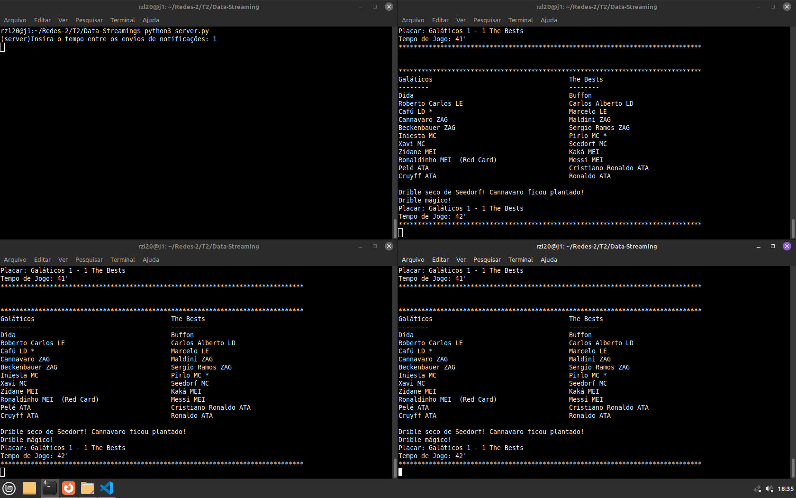

Stream Nature: Our team elected to focus on a soccer stream, based on soccer notifications app, such as the one in Google, our server streams an simulated soccer game for the clients registered in the stream.
Command Line Configuration: A feature enabling the configuration of the time interval for message transmission in the stream via command line has been successfully integrated. We configured the server IP, such that we could test the program in more than one machine, using the department network.
Client-Server Interaction: Multiple clients can register with the server to receive the stream, facilitated through UDP/IP. Upon termination, each client generates statistics on UDP usage, including packet loss and out-of-order packet arrival.
Data Operation: Each client implements an operation on the received data. In our scenario, it´s showed to the client the game event phrase and the score after the event such as showed below, and the teams lineups such as that if a played received a red card it´s showed (red card) after his name, and if he scores n goals, it is showed n '*' after his name, being the lineups updated in stream real time.

Execution Logs: Logs for multiple executions have been documented, with one mandatory execution involving three clients receiving the stream, such as the example above. Below is the example log file generated for the execution above. When the client receives an end of transmission message or an CTL+C, it stores the statistics log, on the client_stats log file. In the file client_log, the client prints out the core events from the transmission such as the received messages and that it registered in server. We use 3 files to store the logs, click on the log file to see for the 3 clients example:
Client statistics Log structure.
(client) Received end of transmission.>>>>>>>>>>>>>>>>>>>>>>>>>>>>>> STATISTICS <<<<<<<<<<<<<<<<<<<<<<<<<<<<<< (client) Number of packets received: 50 (client) Number of lost packets: 0 (client) Number of packets out of order: 0
Server initial log structure
(server) Server started on port 12345. (server) Server name: j1 (server) Server ip: 10.254.225.5 (server) Received b'register' of address ('127.0.0.1', 59791) on socket (server) Registering client ('127.0.0.1', 59791). (server) Number of clients registered: 1Server flow during trasmition and end of game
server.py: This file encapsulates the core functionality of the streaming server, handling client registrations, message streaming, and ensuring the seamless transmission of packets to registered clients.
client.py: This script represents the client-side logic, handling server communication, data reception, operation implementation on the received data, and generating UDP usage statistics upon client termination.
simulate_game.py: Simulate an soccer game using random choices lib, based on soccer Apps notifications, we use the random lib to choose between the possible events from the game, using random soccers phrases based on the event.
For this project we choosed to use an JSON structure, using the fields:
{
"message": {
"count": Integer,
"score": String,
"content": String,
"type": Integer
},
"timeA": Array,
"timeB": Array,
"goleiroA": Goleiro,
"goleiroB": Goleiro
}
Below are the source codes used in this program, your can click on the below links to see the files on your browser, or available on Github at the link: https://github.com/gabdepa/Data-Streaming Client source code Server source code Simulate soccer game source code